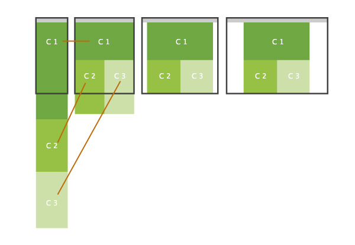
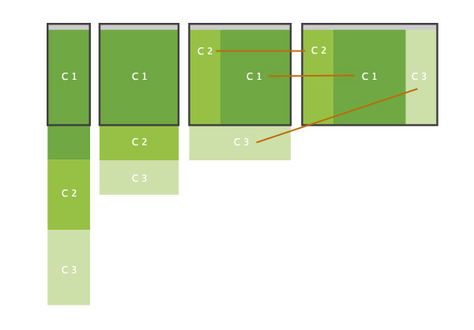
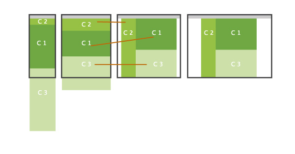
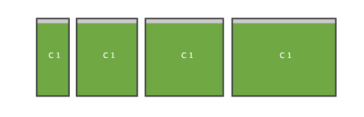
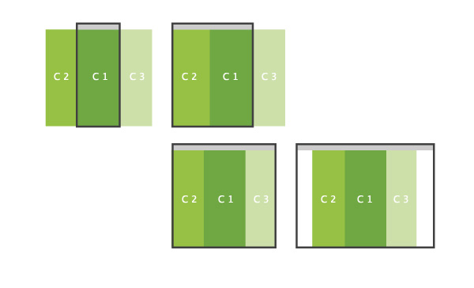

Oradores: @lujanfernando / @agustin107
¿Qué vamos a ver?

Diseño web adaptable
¿Qué es HTML?
Estructura básica
HTML5 - Nuevos Tags
¿Qué vamos a hacer?
¿Qué es Responsive Design?
El Responsive design, es una tendencia totalmente nueva dentro del diseño web, la cual consiste en reacomodar los elementos que componen el sitio web, según el tamaño de dispositivo que la reproduzca.
¿Por qué debo implementarlo en mi diseño?
Porque responsive design tiene que ser pensado desde el concepto de diseño de nuestro sitio web.Este diseño debe tener un concepto de fluido entre los elementos que la componen para así lograr el perfecto flujo al momento de codificarlo.
What???
Entonces, ¿puedo aplicar a mi diseño?
Dependiendo de tu sitio web puede que sea más o menos costoso. En el peor de los casos, estás usando un cms con una plantilla pre-hecha, que va a tener un código desordenado o entendido por ese diseñador, y lo único que te ganes sean dolores de cabeza modificando el flujo del mismo.
No obstante te invito a que des el siguiente paso y hagas un diseño a la medida, es decir que desde ya, pienses qué es lo que va a tener tu sitio y en base a eso planear su implementación para tener el flujo correcto y te sientas algo “anormal” por haberlo logrado.
Genial, no?
Pero.. Qué es un diseño responsive o fluído?
Con ejemplos lo vamos a entender mejor :)
Cómo se logra?
Se logran con un conjunto de técnicas de css3 y en especial las mediaqueries de las cuales hablaremos ahora.
Esto no sólo es agregarle algo más a tu web para que sea más agradable o vistosa, es una necesidad hoy en día ya que la navegación móvil es cada vez más grande y con múltiples resoluciones, por lo cual debemos tener un diseño que se adapte a todo.
SÍ, a TODO!!!
Cómo lo implemento?
Tener los diseños listos antes de su implementación ayuda mucho a tener la mente clara al momento de codificarlo.
Pero no confundamos, no son cuatro diseños para un sitio web, es solo uno (tener cuatro diseños sería una muy mala idea) lo que realmente se hace en los “diseños” adicionales es solo reacomodar el contenido, jerarquizando la información de dicho sitio web.
Patrones Responsive
Se utilizan diversos patrones a la hora de implementar Responsive en un diseño web, es decir, la forma en la que los elementos del sitio web van a ir siendo re-ubicados dentro de la página.
Mostly Fluid
Este quizás es el más popular dentro del responsive design ya que se implementa un primer bloque “protagonista”, seguido de otros 2 con menos relevancia y este al momento de tener un dispositivo se adapta siguiendo el flujo que hay en este.

Column Drop
Este tipo de patrón se adapta hasta el punto en el que no se pueden manejar las tres columnas en una sola fila, entonces la columna (con el contenido menos relevante) pasa a la parte inferior y luego el flujo se sigue desarrollando hasta llegar a una sola columna.

Layout shifter
Este patrón probablemente es la forma en la que se innova en el diseño responsive, ya que cambia ligeramente el diseño.
Esta estructura está orientanda a dar una experiencia diferente en dispositivos de pantallas más reducidas.

Tyny tweaks
Este patrón es puro para los micro sitios que sólo brindan información referencial del producto e invitan a una acción rápida, por tanto la navegación es casi nula y el responsive sólo adapta los contenidos a la pantalla sin casi hacerle cambios.

Off canvas
Este patrón es la más popular en las aplicaciones web que no siempre tienen un diseño ¡wow! sino más bien guardan muchas información y múltiples opciones por lo que tienen que recurrir a esta clase de responsive.
Consiste en sólo tener un bloque de información general que no distraiga mucho (como el timeline de facebook en su aplicacion móvil) y guardan las demás opciones o menús en botones que suelen tener íconos para distinguirlos. Es indispensable que sean interfaces muy usables.

La eiqueta viewport en la web móvil
La etiqueta meta para el viewport fue introducida por Apple en Safari para móviles, para ayudar a los desarrolladores a mejorar la presentación de sus aplicaciones web en un iPhone, iPod Touch o iPad.
La etiqueta viewport nos permite a los que construimos sitios web o web apps, definir el ancho, alto y escala del área usada por el navegador para mostrar contenido.
Mucha teoría, ahora vamos a las piñas ..
Espero que les haya gustado, y a los que están interesados en seguir aprendiendo esta nueva herramienta para los sitios web. Se comunican conmigo por..
- Twitter: @agustin107
- Linkedin: Agustin Ramirez
- Correo: agustin107@gmail.com